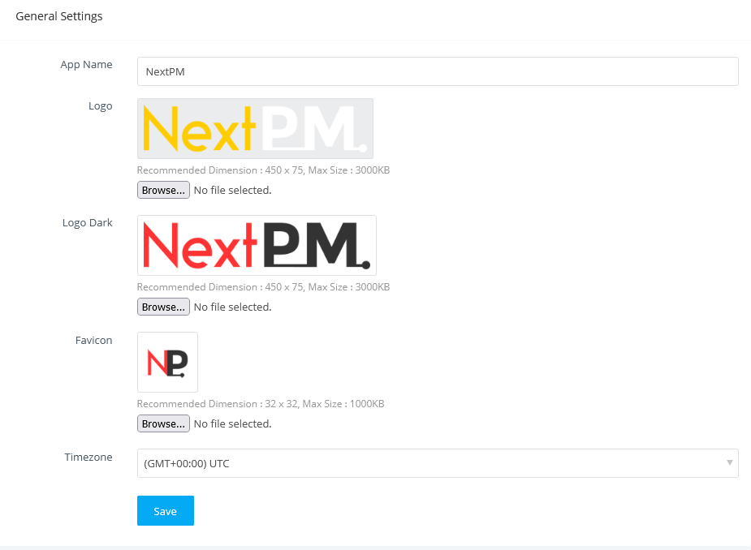

NextPM
Open Source Project Management Script
- Created: 7/8/2022
- Latest update: 7/8/2022
- Author: Muhammad Jaber
- Email: mdjaber.swe@gmail.com
NextPM is a powerful yet simple project management tool that helps a team to improve collaboration, visibility, accountability, and ultimately results. Users can plan projects and milestones, collaborate about work with context, deliver results faster, and report accurately. With Projects, users can assign tasks easily, communicate effectively, be informed on all project updates, get detailed reports on work progress and deliver projects on time, every time.
Installation
PHP 7.0.0 or higher [PHP 7.0 or 7.1 recommeded for good performance]
MySQL 5.1+
MySQLi Extension
OpenSSL PHP Extension
Mbstring PHP Extension
PDO PHP Extension
Tokenizer PHP Extension
PHP Zip Archive
IMAP Extension
PHP GD Library
PHP Fileinfo extension
PHP CURL extension
[/storage/app] 775
[/storage/framework] 775
[/storage/logs] 775
[/bootstrap/cache] 775
[/public/uploads] 775
Installation Manual
-
Download the
(https://github.com/mdjaberswe/nextpm/archive/master.zip)package from Github.
or clone the repo:git clone https://github.com/mdjaberswe/nextpm.git -
Run composer install to get all the dependencies specified in the composer.lock file
composer install - Upload it to your server.
- Extract the package (Check proper File and folder permissions).
-
It is important to change the domain's or subdomain's document root to the
publicfolder ofnextpm. -
Create a MySQL database for NextPM on your host and remember the following information:
- Database Name
- Database Username
- Database Password
-
Now you can access NextPM at:
http://yourdomain.comorhttp://subdomain.yourdomain.com - Follow the web installation wizard and you will get NextPM installed on your host.
Once you have successfully got NextPM up and running, you can go through the configuration wizard to set up it on your server.
-
First of all, NextPM will check if there is any library missing on the server and will remind you to install it.
-
Once all the dependencies are installed, the second step helps you to configure web app information.
You need to set the purchase code and system email in the step.
The information can be changed later on in the Administration settings.

-
At this step, you need to fill in the database credentials for NextPM to connect to.
When you are done adding or editing information on the page, click the "Save" button to continue.
This database settings information can later be edited in the [app_root]/.env file.
-
Once the database connection is established, NextPM will initialize the database with the default settings as well as create the default administrator.

Importing ...
-
And after everything is completed, you are all set to go with NextPM.

Source Code
The application is developed in Laravel framework and completely follows MVC.
The root directory contains
- App
The app directory holds the base code of the application. It comprises various sub folders as explained below :
Console
The console directory includes the artisan commands necessary for the application.Events
The Events directory holds event files that the application may pop up. The default file included is event.php where all the basic events are declared.Exceptions
This folder contains all the methods needed to handle exceptions. It also contains the file handle.php that handles all the exceptions.Http
The Http directory holds different filters, requests, and controllers.- Composers
- Controllers
- Admin
- AdminBaseController.php
- AdminDashboardController.php
- AdminEventController.php
- AdminFileController.php
- AdminHistoryController.php
- AdminImportController.php
- AdminIssueController.php
- AdminIssueStatusController.php
- AdminIssueTypeController.php
- AdminMessageController.php
- AdminMilestoneController.php
- AdminNoteController.php
- AdminNotificationController.php
- AdminProjectController.php
- AdminProjectStatusController.php
- AdminRoleController.php
- AdminSettingController.php
- AdminTaskController.php
- AdminTaskStatusController.php
- AdminUserController.php
- Auth
- AuthController.php
- PasswordController.php
- Controller.php
- ErrorController.php
- HomeController.php
- InstallController.php
- LicenseController.php
- Admin
- Middleware
- Requests
- Kernel.php
- routes.php
Jobs
The Jobs directory holds all lineup jobs in this directory. The base class is shared among all the Jobs and provides a central location to place them under one roof.LibraryListeners
Listeners are event-dependent and they include methods which are used to handle events and exceptions.Models- AllowedStaff.php
- AttachFile.php
- BaseModel.php
- ChatReceiver.php
- ChatRoom.php
- ChatRoomMember.php
- ChatSender.php
- Event.php
- EventAttendee.php
- FilterView.php
- Follower.php
- Import.php
- Issue.php
- IssueStatus.php
- IssueType.php
- Milestone.php
- Note.php
- NoteInfo.php
- Permission.php
- Project.php
- ProjectStatus.php
- Revision.php
- Role.php
- Setting.php
- SocialMedia.php
- Staff.php
- Task.php
- TaskStatus.php
- User.php
Notifications
The Notifications directory contains all notifications sent through the application.Policies
The policies directory holds different policies for the application.Providers
The Providers directory is used for containing different service providers. - Bootstrap
The bootstrap directory contains all the bootstrapping scripts used for the application.
- Config
The config directory holds all configuration files (.config).
- Database
The database directory holds all database files.
- Public
The public directory helps to start the application and maintains other necessary files such as JavaScript, CSS, and images.
- Resources
The resources directory holds all the Sass files, language (localization) files, templates.
- admin
- auth
- emails
- errors
- install
- layouts
- partials
- templates
- vendor
assets
The assets folder include files such as LESS and SCSS, that are required for styling the application.
lang
This folder includes configuration for localization or internalization.
views
Views are the HTML files or templates which interact with end users.
- Storage
The storage directory holds all session files, cache, compiled templates as well as miscellaneous files generated by the framework.
- Tests
The test directory holds all test cases.
- Vendor
The vendor directory holds all composer dependency files.
Features
- Project management
- Project administration
- Project reports
- Task management
- Milestone tracking
- Issue tracking
- Gantt charts
- Event calendar
- Tabular, kanban and calendar View
- Filtered views
- Followers
- Record owner
- Notes
- File management
- Histories
- Data import/export
- Mass updates
- Dashboard
- Charts and reports
- Role based permissions
- Access control
- Messaging or instant messaging
- Announcement
- Realtime notifications
- And more...
Projects
The Project Module has two basic views tabular and kanban. The tabular view shows a list of all the projects along with their attributes like the owner, percent completion, end date, etc. Project's kanban view where you can modify project status by drag and drop. When you set up a project, you can mark specific points along its timeline, called milestones. Under each milestone, there are tasks that you can assign to different users on your team. Within each project, you have access to a Gantt chart and report page where you can view the status of your team, as well as the progress made on various milestones, tasks, and issues.
Project List

Project Kanban

Project Single Page

Tasks
Task has three basic views tabular, kanban and calendar view. The tabular view shows a list of all the tasks. Kanban is self-explanatory. You can view the tasks and a board kind of view and you can drag-and-drop tasks across statuses. There are advanced views where we've applied some of the most frequently used filters and given them here as these views you can create your custom view like this and you can also search for a view here. Apart from these, you can apply other filters here and you can save the results to a CSV file.
Task tabular list page
Task kanban page
Task single show page

Issues
Similar to Task Module, the Issue Module has three basic views tabular, kanban and calendar view. The tabular view shows a list of all the issues along with their attributes like owner, status, severity, etc. We have provided a set of pre-defined views that you might need frequently. You can also apply filter and view their results as well. We have the kanban view where you can modify issue status by drag and drop.
Issue tabular list page
Issue kanban page
Issue single show page

Calendar
Calendar feature is managing your tasks, issues and events effectively.
It's fast and customizable to track your events, tasks, issues.
It's easy to add new tasks or issues.
It's quick to edit and complete your task or issue.
Administration
All configurations specific to an application can be configured from the Settings page. Segregated into different sections, each setting facilitates enhancing the aspects of its area. To navigate to the Settings page click on the "Administration" option displayed on the left sidebar.
General SettingsView and edit settings like application name, logo, favicon, timezone, and other general aspects. You will be able to define the basic level settings of your application.

Email SettingsView and edit settings like system from email, name, default mailer PHP mail() or SMTP. If the default mailer is SMTP then settings hostname, username, password, port, encryption, etc.

When working in NextPM you come across various statuses & dropdowns, such as task status, issue status, project status, etc. You can configure statuses & dropdowns in the Selection Lists section.
Click Administration > Custom Dropdowns.
Here you can add new statuses/stages/types, delete those you don't need, edit statuses/stages/types names, or category. Also, you can change the order of statuses/stages/types. Just drag and drop statuses/stages to do that.

Users and Roles
If you need to add a new user in NextPM then click "Add User" and put in all the user details and role and hit save.
In a user single show page, you will see the user-owned/related projects, tasks, milestones, etc.

User single show page
Each person on a team has a different role to play within an organization and may require a unique set of permissions.
In addition to default roles like Administrator or Standard, NextPM allows you to create your custom role using the role feature.
You can set permissions for the role to view, add, edit, and delete modules.

Messaging
The internal messenger delivers instant messages.
All messages are saved in history and the most recent messages appear at the top of the list.
The messenger interface includes a search for users, with the most recent users displayed conveniently.
An online indicator is included in the message window.

Notes
In NextPM, you can associate notes to the records by specifying the required details. You can create notes only if you have the Create permission for Notes. In the Module Details page, click the note tab and you have the existing note details, if any, are displayed. Enter the note content in the text box. Click the Attach File link if you want to upload files to the note. You can attach up to 10 files in a note and click "Save".

History
In the NextPM when you open a record under each individual on the history tab where you can see all the changes update with regards to that record.